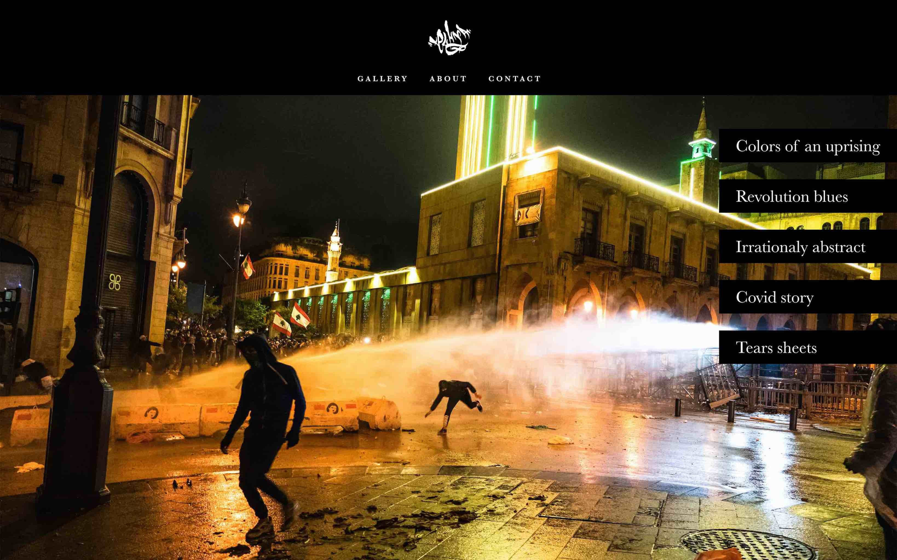

Gallerie des séries


Xeuhma cherche à photographier pour la presse afin de comprendre et faire comprendre ce qui pousse l'humanité à agir. L'essence de son travail artistique est la dualité et le questionnement de la réalité. Il se considère comme quelqu'un d'émotionnellement binaire, sans nuances. Pour lui l'expression à travers l'art est une nécessité : ce n'est pas un passe-temps mais un exutoire.
Un arrière-plan sombre donne de l’élégance à l’interface, attire le regard et amène l’utilisateur à se concentrer sur le contenu. Les images sont nombreuses et les textes sont courts, le fond noir améliore ici la perception de la hiérarchie visuelle. Le choix d’un gris très clair pour les textes adoucit le contraste avec le fond.
#010101
#F7F9F9
Titre 1 - Baskerville 32/36
Titre 2 - Baskerville 24/30
Texte - Baskerville 14/18